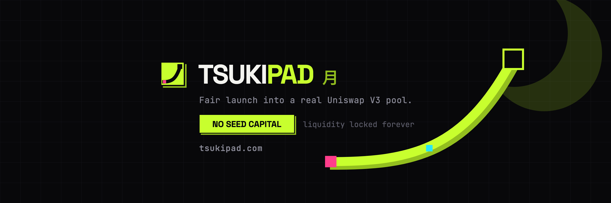

BANNER — pink = cropped on mobile · circle = avatar overlay

A — full bleed · 180px
A · 64px (timeline)
A · 32px
B — tile · 180px
B · 64px (timeline)
B · 32px
 A — full bleed · 180pxA · 64px (timeline)A · 32px
A — full bleed · 180pxA · 64px (timeline)A · 32px B — tile · 180pxB · 64px (timeline)B · 32px
B — tile · 180pxB · 64px (timeline)B · 32px